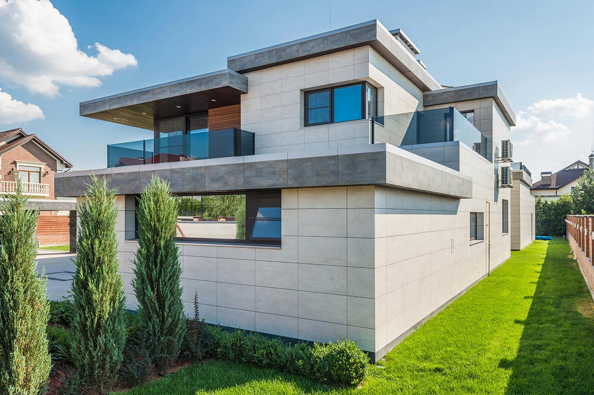

01
Reformas integrales en Valencia
Kerania aborda proyectos de reforma integral en los que diferentes trabajos deben coordinarse para transformar un espacio de manera completa.
Cada proyecto parte del análisis del estado existente y de las necesidades del cliente para organizar las actuaciones, los materiales, las diferentes fases de obra y los acabados.
El objetivo es conseguir una ejecución coherente en la que cada intervención forme parte de un resultado conjunto.